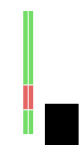

Introduction to
Microcontroller Programming
using an Atmel ATmega32U4
Joachim Fenkes (@dop3j0e)
Gregor Jehle (@hdznrrd)

View online: bit.ly/uc-basics
Today's Goals
- Understand
- Microcontroller programming basics
- I/O and Hardware assist units
- Basic external peripherals
- Reading Datasheets
- Implement
- Hello World
- LED Larson Scanner
- Button Control
Who we are
- Joachim "Jocki" Fenkes
- created the board we're using today
- Gregor "hadez" Jehle
- used to program MCUs for a living
Who are you?
- Please introduce yourselves with
- Your name
- One sentence about your prior knowledge with microcontrollers
Dedicated to
Jan-Bernd ThemannR.I.P., my friend
What is a Microcontroller?
"A microcontroller [...] is a small computer on a single integrated circuit containing a processor core, memory, and programmable input/output peripherals. Program memory [...] is also often included on chip, as well as a typically small amount of RAM. Microcontrollers are designed for embedded applications [...]"(Source: Wikipedia, bit.ly/1tW56eP)
Applications
 CC-BY-NC
CC-BY-NCGregor Jehle, Faye Yu
CC-BY-NC-SA
Gregor Jehle, Samsung Tomorrow
Gregor Jehle, Samsung Tomorrow
CC-BY-NC-SA
Gregor Jehle, Samsung Tomorrow
Gregor Jehle, Samsung Tomorrow
Typical block diagram
R - RAM F - Program Flash P - Craploads of Peripherals
Limitations
- A uC ain't a PC!
- Optimized for low power and size
- Slow compared to a PC or a smartphone
- Little RAM
- No floating point unit
⇒ usingfloatordoublewill be very very very very slow! - Sometimes not even HW multiplication
Our learning modules today
- Hello, World!
- Interrupts & Timers
- LEDs & I/O
- Button Control
- Extending your I/O
The ATmega32U4 microcontroller
- 8-bit AVR CPU
- Up to 16 MHz on 5V, up to 8 MHz on 3.3V
- 32 KiB of program Flash
4 KiB used for bootloader, so 28 KiB available for programs - 2.5 KiB of SRAM
- 26 external I/O pins
- Integrated USB controller
The ATmega32U4 microcontroller
The ATmega32U4 microcontroller
The TinyMega Board
- The MCU itself
- USB jack
- Lots of labeled I/O pins
- Two LEDs (Green: Power, Blue: User)
- Two buttons (Reset, Bootloader/User)
The ATmega32U4 datasheet
- Most important piece of documentation
433 pages o.O - We will guide you to the relevant sections
- General intro to datasheets will follow later
- Get it here: bit.ly/1Ht3JLj (PDF)
(Note: Hover any shortened link to see where it leads)
Arduino vs. bare metal coding
- Arduino hides the gory details
- Pro: Easier to learn, quick prototyping
- Con: You don't understand how it's done → "magic"
- Con: Arduino trades speed & size for simplicity
Module 1
Hello, World!
in which an LED will blink!
Stuff you will need
Structure of MCU firmware
- It's a program like any other!
main()function comprised of- Initialization code
- Main loop
- avr-libc takes care of the gory stuff
- Caveat: Don't exit the main-loop
avr-libc
- Startup code, platform support
- Standard C library functions
- Access to uC specialties (
avr/*.h) - Home page: http://bit.ly/1yI2MN0
- Prettier docs: http://bit.ly/1CduWR7
General Purpose I/O
- Most I/O pins of the ATmega can be controlled directly as digital I/O
- Output mode
- Write a zero (GND) or one (supply voltage, VDD)
- Input mode
- Convert pin voltage to one or zero and return
- Optional pull-up resistor selectable by software
- Caveat: Some levels are undefined!

General Purpose I/O
- Pins are grouped into "ports"
- ATmega32U4 has ports B, C, D, E, F
- Pins inside a port are numbered 0..7
eg. B1, B2, C7
- Caveat: Not all ports have all pins populated!
Port control though registers
- All hardware units in AVR MCUs are controlled through memory-mapped registers
- Like special RAM variables
- Each port has three registers
-
PORTx ⇒ Write output values or enable/disable pull-up PINx ⇒ Read input values (read "Port INput", not "Pin"!) DDRx ⇒ Data Direction Register
selects in (0) / out (1) direction per pin
-
Port control: Example
#include <avr/io.h>
{
// After reset, all pins default to input, no pull-up
PORTB = (1 << PB3); // Enable pull-up on B3
DDRB = (1 << PB2); // Set B2 to output, all others to input
if (!(PINB & (1 << PB3))) // If something pulls B3 down...
PORTB |= (1 << PB2); // Set B2 to high, keep rest as is
}Register field names in avr-libc are generally shift distances, not values. This is necessary for multi-bit fields.
Simple delay
#define F_CPU 16000000UL // CPU clock is 16 MHz
#include <util/delay.h>
{
_delay_ms(1000); // waaaait a sec...
_delay_us(10); // and a bit more
}Toolchain installation
- Linux
apt-get install avr-gcc apt-get install dfu-programmer
- Some distros (e.g. Red Hat) may require explicit
avr-libcinstall - If in doubt, search for packages with
avrordfuin their name
- Mac OS X
- You'll need the Homebrew package manager: http://brew.sh/
brew tap larsimmisch/avr brew install avr-gcc brew install dfu-programmer
- Windows
- AVR 8-bit Toolchain: bit.ly/1gHcJTy
- FLIP programmer: bit.ly/1hEOZuC
- USB driver, if necessary: bit.ly/SXghXb (ZIP)
Template code
Create a filemodule1.c:
#include <avr/io.h>
#include <util/delay.h>
int main(void)
{
// Setup code goes here
while (1) {
// Main loop goes here
}
}Build
- Compile the source
avr-gcc -mmcu=atmega32u4 -DF_CPU=16000000UL \ -Os -o module1.elf module1.c - Generate an Intel HEX file for flashing
avr-objcopy -O ihex module1.elf module1.hex
- Display the firmware size
avr-size module1.elf
text+data⇒ Flash usage
data+bss⇒ RAM usage
Program (Linux)
- Erase the whole device -- bootloader always needs this
sudo dfu-programmer atmega32u4 erase
- Program the HEX file we just generated
sudo dfu-programmer atmega32u4 flash module1.hex
- Have the bootloader jump into the firmware
sudo dfu-programmer atmega32u4 start
Rumor has it you can save on
sudoby adding your user to the
uucpgroup.
Program (Windows)

Make sure "Reset" is turned off for your first programs
Now go forth and code!
- Task: Make the user LED on the TinyMega blink with 1 Hz
- (the MCU equivalent of "Hello, World!")
- Info:
- The LED is connected to pin E6
- Set the pin to 1 to turn on the LED
- Remember to set the pin to output first
- Use a simple delay loop, nothing fancy
- We left a trap for you to discover, so call us if you run into problems ;)
Base Clock Prescaler
- The ATmega32U4 has an internal clock divider to divide down the external clock.
- Example uses:
- Power saving by dynamic frequency switching
- Adapt to lower voltages (only 8 MHz at 3.3V)
- Trap: Defaults to "divide by 8" in factory settings!
- Solution:
#include <avr/power.h> clock_prescale_set(clock_div_1);
Bonus task!
Make the LED morse SOS, or even arbitrary text.
Module 2
Interrupts & Timers
in which we will waste less CPU cycles!
Stuff you will need
Problems with the previous solution
- Hogs CPU cycles ("busy waiting" or "polling")
- Burns power: CPU constantly busy
- Adding work will make accurate timing difficult/impossible
Solution: Hardware Timers!
- ATmega32U4 has four Timer/Counter (T/C) modules
- HW counter, counting up at (divided) clock frequency
- "Compare registers" to trigger actions at certain values
- Can also directly control I/O pins, capture event timestamps, ...
Interrupts (IRQs)
- Asynchronous interruption of program flow
- Can happen at any time, triggered by hardware
- Many IRQ sources with own handlers
- Timer overflow, Timer compare, Pin toggle, ...
- Can be enabled / disabled globally
sei()- SEt Interrupts cli()- CLear Interrupts
Interrupt Handlers
- Special function, "called" through interrupt
- Also called "Interrupt Service Routine" (ISR)
- Return from handler continues program
#include <avr/interrupt.h>
ISR(TIMER0_COMPA_vect)
{
// Code goes here
}See http://bit.ly/15b5KgO for possible interrupt names
ISR best practices
- You're just interrupting someone else
- Keep it short!
- Communication with main loop: shared global variables
- Declare them
volatile!
Tells compiler they may change without notice
- Declare them
Setting up a Timer/Counter
- Let's look at the datasheet, chapter 14
- o.O So many options!
Let's pick a few that make sense for us
Choosing a mode
- We want to wait for a given time, generate an IRQ, repeat
- CTC mode (14.8.2) sounds like the one for us:
- "Clear Timer on Compare match"
- Count to N, interrupt, start back at zero.
Choosing a prescaler
- T/C1 can count up to 65535
- We want to wait for half a second
- Choose slowest prescaler value of CLK/1024
- How many ticks per second?
- 15625 ticks per second
Building the T/C control registers
- TCCR1A - 14.10.1 (Timer/Counter Control Register A, T/C 1)
- We can ignore the Compare Output Modes
- Choose WGM 4: CTC with TOP = OCR1A
- TCCR1B - 14.10.3 (Timer/Counter Control Register B, T/C 1)
- We can ignore Input Capture
- Clock Select = 0b101 (CLK / 1024)
- TCCR1C - 14.10.5 (you get the idea)
- Can be ignored
Building the T/C control registers
- OCR1A - 14.10.9 (Output Compare Register A, T/C 1)
- Determines IRQ frequency
- TIMSK1 - 14.10.17 (Timer Interrupt Mask, T/C 1)
(Output Compare A Interrupt Enable, T/C 1)
- Write 0xFF once to clear all pending IRQs
- Just to be safe
The setup code
#include <avr/io.h>
{
TCCR1A = 0; // Control Reg A
TCCR1C = 0; // Control Reg C
TCNT1 = 0; // Timer/Counter 1 -- the counter itself
OCR1A = 7812; // Output Compare Reg A
TIMSK1 = 1 << OCIE1A; // Int Mask = Output Compare A Int Enable
TIFR1 = 0xFF; // Interrupt Flag Reg
// Set Control Reg B last because setting Clock Select (CS) starts the T/C
TCCR1B = (1 << WGM12) | (5 << CS10);
}Now go forth and code!
- Task: Transform the busy loop from module 1 into a timer-driven blinking LED.
cp module1.c module2.c
- Info:
- Use T/C 1 in CTC mode
- Remember to enable interrupts after setup
- Question:
- Which interrupt to hook?
Bonus tasks!
- Save power by using Sleep Mode in main loop
- Chapter 7 of datasheet
avr-libc sleep mode documentation: http://bit.ly/1yMSooS
- Chapter 7 of datasheet
- Again, get the LED to morse text
Tips & Tricks
- Toggle a port pin value by writing PINx:
PINE = 1 << PE6;- Little known (but documented) AVR feature
Module 3
LEDs & I/O
in which we will revive K.I.T.T.!
Stuff you will need
several
8x
8x
LED basics
- Cathode = Minus = short leg = Base plate inside LED
(German: Kathode = kurzes Bein) - An LED's brightness depends on current
- Typical IF: 10..20 mA
- Add "dropper resistor" in series to get the right current
- Let's check the datasheet for the expected VF: bit.ly/1IbHPdP (PDF)
Datasheets
- Typical sections:
- Summary, core features and values
- Basic operation
- Absolute Maximum Ratings
- Device characteristics
- Tables with min/typ/max values
- Graphs
- Detailed usage information
- Example application circuits
- Test circuits used
- Package information, solder patterns
- Order information, revisions, disclaimers
Our LED
- IF = 20 mA
- VF = 1.85 V
- ⇒ R = (VDD - VF) / IF ≈ 160 Ω
- Pick next higher standard value: 180 Ω
Recommended coding
- Build upon your code from last module
- Change OCR1A to go faster
- Connect all LEDs to pins of the same port
- One assignment to set them all
Now go forth and code!
- Task: Implement a Larson Scanner
cp module2.c module3.c
- Info:
- Remember correct port setup
Bonus task!
- Invent other, more complex patterns
- (from inside to outside, binary counter, etc...)
Stuff you will need
several
8x
8x
Add a button!
- Button will usually connect A to B when pushed
- "Single Pole, Single Throw" - SPST
Pole ⇒ number of "channels" Throw ⇒ number of positions per channel
(think "# ways to throw a switch")
- Idea: Push to connect input pin to VDD
- But what happens while not pushed?
High-Z / floating state
- Pins that are not connected anywhere
- Called "floating"
- Or High-Z for "high resistance to anywhere"
- A floating input will read random values!
- Collects charge though static and ambient noise
- Solution: Remove the High-Z condition
- by adding a low-Z path.
Pull-up / Pull-down resistors
- Provide a path from pin to defined voltage (VDD, GND)
- Neither a short circuit nor High-Z
- Typical resistor value: around 10kΩ
- Pulls floating pin up to VDD or down to GND
- Can be easily overcome by a short circuit, e.g. a button
- SC creates negligible current while pushed -- 0.5 mA for 10kΩ, 5V
- Like a water reservoir (think flush toilet)
- Water level is pin voltage
- Pull-Up is water supply with valve
- Button is big flush valve
Full circuit
- Either pull-down with button to VDD or pull-up with button to GND
- Which one should we use?
- Reminder: ATmega pins have optional internal pull-up!
- So choose pull-up with button to GND
- Switch pin to input + pull-up
- If we read a zero, the button is pushed
Level triggered vs. edge triggered
- We will poll the button in our main loop
- Options:
- Do something whenever polling returns "pushed"
- Will do something every iteration
- "Level triggered"
- Do something when button changes from "not pushed" to "pushed"
- Will do something once per button push-release cycle
- "Edge triggered"
- Do something whenever polling returns "pushed"
Now go forth and code!
- Task: Advance Larson Scanner manually instead of timer
cp module3.c module4.c
- Info:
- Don't throw away the timer code, just turn off timer
- Move main Larson code into own function
- Poll button in main loop, edge trigger Larson code
- Remember to switch pin to input + pull-up
- We have left a trap for you -- if anything's weird, please speak up!
Button contact "bouncing"
- Buttons have mechanical contacts that are not perfect
- When pushed, will bounce ever so slightly
- Causes short on-off-on-off-... sequence
- Will settle into permanent "on" after a short time
- Trap: If polling code is fast enough, it will see this!
- Will interpret as several very fast pushes
- Only a problem with edge triggering
Debouncing techniques
- Analog filter (lowpass)
- Will smooth out button signal, needs hardware
- Digital filtering
- Keep history of last N measurements
- Require all measurements to agree
- Slower polling (if possible)
- Bouncing will disappear in time between polls
- Easiest solution
Now go forth and code!
- Task: Debounce your button
- Info:
- Use the same source file
- Your choice: digital filter or slower polling
Bonus task!
Use EEPROM to store state across power cycling
Read up on EEPROM at bit.ly/1A8vzaw
Further reading
ATmega has ways of causing interrupts when an input changes
- Pin Change Interrupt
- Triggers on any change
- External Interrupt
- Trigger on rising edge, falling edge, or low level
Check out datasheet chapter 11 for details
Module 5
Extending your I/O
in which three pins will control 16 LEDs!
Stuff you will need
several
16x
16x
2x
What is a shift register?
- Converts serial data to parallel data or vice versa
- Data is shifted in/out bit by bit
- A clock signal triggers a single shift
- Our device: Serial in, parallel out (SIPO)
- Latched: Outputs kept static while new data shifted in
- Latch signal changes all outputs at once
How do I use a SIPO shift reg?
for (i = 0 .. number of bits) {
set data input pin to next bit
(starting with outermost bit)
pulse clock pin
}
pulse latch pin
Daisy Chaining
- A shift reg usually also has a serial output pin
- Can be used as input for another shift reg
- Clock and latch pins can be tied together
- Infinite shift register! \o/
SN74HC595
- Part of the 74xxx series of standard logic (bit.ly/SaEU1L)
- Lots and lots and lots of parts available (bit.ly/SwsD89)
- From every vendor
- VV74SSNNN
- VV - Vendor, e.g. SN for Texas Instruments
- SS - Series, e.g. HC for High-Speed CMOS
- NNN - Function, 595 is latched SIPO
SN74HC595 datasheet
- Get the datasheet (bit.ly/UdZpfR, PDF)
- This is for an NXP part, but equivalent and more readable
- Unusual pin names:
- SHCP = Shift Clock Pulse = Serial clock
- STCP = Storage Clock Pulse = LATCH
Circuit Building
- Put the two 74HC595 onto the breadboard
- Connect VDD and GND, tie to VDD, to GND
- First DS to TinyMega, second DS to first Q7S
- Both CLK to one TinyMega pin, both LATCH to another
- Now place LEDs and resistors
Circuit Cheat Sheet
- Connect VDD and GND, tie to VDD, to GND
- First DS to TinyMega, second DS to first Q7S
- Both CLK to one TinyMega pin, both LATCH to another
Now go forth and code!
- Task: Transform the Larson Scanner to use SIPO
cp module4.c module5.c
- Info:
- Use a two-byte buffer for the LED states
- Shift that buffer out to the SIPO
- Use a simple loop, don't try to be smart
- Question:
- Do you need delays between bits?
- tpd,SHCP..Q7S = 32 ns; tW,SHCP = 6 ns
→ need ~40 ns pulse, 1 / 16 MHz = 62,5 ns → safe
Aside: Debugging technique
- Use unused pin as debug signal
- Set / reset on given events
- Watch on oscilloscope to:
- Measure signal timing
- Find out time taken by code
- Trigger on sporadic events
Wrapping Up: What we touched today
Feedback
This is the first time we're doing this, so we need your input!
- Scope:
- Too much information for one day or not?
- Granularity:
- Too many details somewhere? Too little? Just fine?
- Prerequisites:
- Did we expect too much prior knowledge anywhere?
- Speed:
- Did we go too fast / too slow?
- Simplicity:
- Were we hard to follow anywhere?
We also gladly take feedback via mail =)
That is all.
Now go forth and make stuff!
Thank you for attending.
Meta Information
- Slides: github.com/shackspace/uc-basics
- Datasheets
- Microcontroller (ATmega23U4): bit.ly/1Ht3JLj (PDF)
- LED: bit.ly/1IbHPdP (PDF)
- Shift Register (74595): bit.ly/UdZpfR (PDF)
- Contact Info
- Joachim Fenkes
@dop3j0e, github.com/dop3j0e, uc-basicsatdojoedotnet - Gregor Jehle
@hdznrrd, github.com/hdznrrd, uc-basicsatfollvalschdotde
- Joachim Fenkes
Links to relevant avr-libc docs
- Base documentation: http://bit.ly/1CduWR7
- Interrupts: http://bit.ly/15b5KgO
- Power & Clocks: http://bit.ly/1BGLSAr
- Sleep mode: http://bit.ly/1yMSooS
- EEPROM access: http://bit.ly/1Bf4qFh
Source Attribution
- Samsung Crystal Blue washing machine
- CC-BY-NC-SA Gregor Jehle
- Original: CC-BY-NC-SA Samsung Tomorrow, 2014-05-14 15:31, https://www.flickr.com/photos/samsungtomorrow/14180614352/
- Rancilio coffee machine
- CC-BY-NC Gregor Jehle
- Original: CC-BY-NC Faye Yu, 2014-05-14 15:42, https://www.flickr.com/photos/fayeyu/7776398/
- Samsung Stainless Steel microwave oven
- CC-BY-NC-SA Gregor Jehle
- Original: CC-BY-NC-SA Samsung Tomorrow, 2014-05-14 15:47, https://www.flickr.com/photos/samsungtomorrow/7792317532/
- Atmel ATmega32U4 Block Diagram
- Color highlighting: CC-0 Gregor Jehle
- Original: © 2014 Atmel Corporation, 2014-05-28 15:00, Atmel-7766G-AVR-ATmega16U4-32U4-Datasheet_02/2014